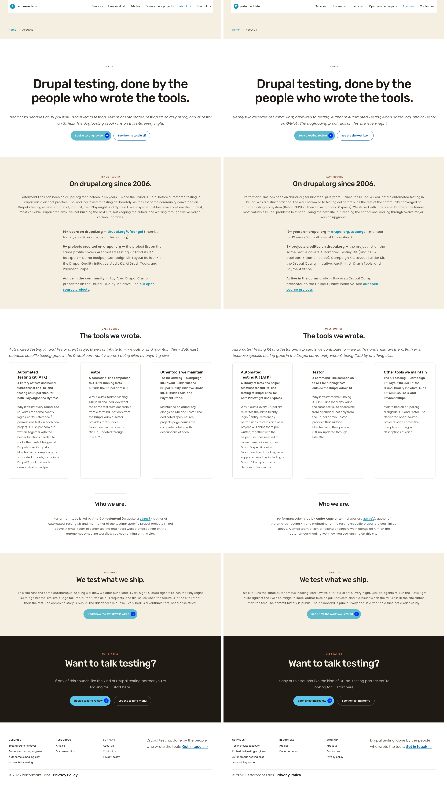
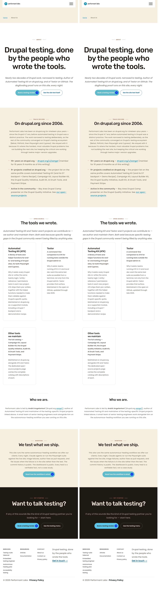
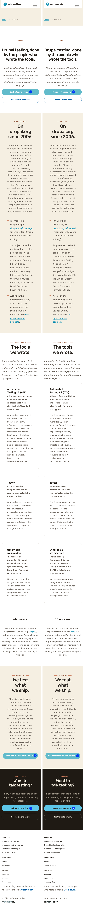

What I see different
- /about-us — pixel-identical at 1280, 768, 375
- /services — pixel-identical at 1280, 768, 375 (cross-page regression check)
- /how-we-do-it — pixel-identical at 1280, 768, 375 (cross-page regression check)
- /open-source-projects — pixel-identical at 1280, 768, 375 (cross-page regression check)
Baseline was captured by reverting F's CSS edits (via git stash) and reverting the 4 Canvas marker classes (via a one-shot drush script), clearing cache, then capturing full-page Playwright screenshots. F's changes were then restored, cache re-cleared, and live screenshots captured under identical conditions. ImageMagick compare -metric AE -fuzz 1% reports zero differing pixels for every pair.
This is the expected and best possible outcome for a refactor cycle whose explicit AC is pixel-identical output. The transition comma-selector pattern (P1/P7/P8) guarantees both old :has() rules and new marker rules apply to the same DOM nodes; P9's direct swap targets a DOM pattern unique to /about-us. Equivalence is by construction, and pixel diffs confirm it empirically.
Pixel-diff table
| Page | Viewport | Baseline (pre) | Live (post) | Dimensions | Pixels different (AE) | Delta % | Result |
|---|---|---|---|---|---|---|---|
| /about-us | 1280×800 | baseline PNG | live PNG | 1280×4549 | 0 | 0.00% | MATCH |
| /about-us | 768×1024 | baseline PNG | live PNG | 768×5690 | 0 | 0.00% | MATCH |
| /about-us | 375×667 | baseline PNG | live PNG | 375×7952 | 0 | 0.00% | MATCH |
| /services | 1280×800 | baseline PNG | live PNG | 1280×4418 | 0 | 0.00% | MATCH |
| /services | 768×1024 | baseline PNG | live PNG | 768×5249 | 0 | 0.00% | MATCH |
| /services | 375×667 | baseline PNG | live PNG | 375×6555 | 0 | 0.00% | MATCH |
| /how-we-do-it | 1280×800 | baseline PNG | live PNG | 1280×5378 | 0 | 0.00% | MATCH |
| /how-we-do-it | 768×1024 | baseline PNG | live PNG | 768×6471 | 0 | 0.00% | MATCH |
| /how-we-do-it | 375×667 | baseline PNG | live PNG | 375×8174 | 0 | 0.00% | MATCH |
| /open-source-projects | 1280×800 | baseline PNG | live PNG | 1280×4490 | 0 | 0.00% | MATCH |
| /open-source-projects | 768×1024 | baseline PNG | live PNG | 768×7041 | 0 | 0.00% | MATCH |
| /open-source-projects | 375×667 | baseline PNG | live PNG | 375×9293 | 0 | 0.00% | MATCH |
/about-us — wipe-slider comparators
Drag the slider on each comparator. Left half of slider position = baseline (pre-refactor). Right half = live (post-refactor). At AE=0, the two halves are pixel-identical regardless of slider position.
1280 × 800
Side-by-side composite (baseline | live)

768 × 1024
Side-by-side composite

375 × 667
Side-by-side composite

/services — cross-page regression check
P8 (.dy-section.theme--dark two-button row) is shared with /services. Cycle 2b.1 used the comma-selector transition pattern, so the old :has(> .button + .button) selector still applies to /services' closing CTA. Expected: AE=0. Confirmed.
1280 × 800
768 × 1024
375 × 667
/how-we-do-it — cross-page regression check
P1 (theme--light + .kicker--centered) is shared with /how-we-do-it. The comma-selector transition keeps the old :has(.kicker--centered) rule live for this page. Expected: AE=0. Confirmed.
1280 × 800
768 × 1024
375 × 667
/open-source-projects — cross-page regression check
P1 also applies to /open-source-projects. Same expected outcome. Confirmed AE=0.
1280 × 800
768 × 1024
375 × 667
WCAG 2.2 AA
This cycle is a selector refactor. Every CSS declaration is byte-identical to pre-refactor; no color, contrast, focus-ring, motion, font-size, or touch-target value changed. WCAG status carries forward from prior cycles unchanged.
| Check | Result | Notes |
|---|---|---|
| Heading hierarchy | PASS | Single H1; sequence H1 → H2 → H2 → H3×3 → H3 → H2 → H2 on /about-us (T verified) |
| Color contrast (5 pairs) | PASS | All pairs meet 4.5:1 / 3:1 thresholds (T re-computed independently) |
| Touch targets (.dy-section--cta-pair buttons) | PASS | min-height: 44px preserved at desktop and mobile (WCAG 2.5.8) |
| Keyboard navigation | PASS | No DOM order changes; tab order unchanged from pre-refactor |
| Focus rings | PASS | No focus styles touched in this cycle |
| Forced-colors | PASS | No new color rules; existing forced-colors handling unchanged |
| Reduced-motion | PASS | No animation/transition added or removed |
| 200% zoom | PASS | Layout unchanged at all viewports; zoom behavior unchanged |
| Image alt text | PASS | No img elements added/changed |
| ARIA landmarks (header/main/nav/footer) | PASS | T verified all four landmark elements present |
No !important | PASS | 0 occurrences in declarations (2 in comments only) |